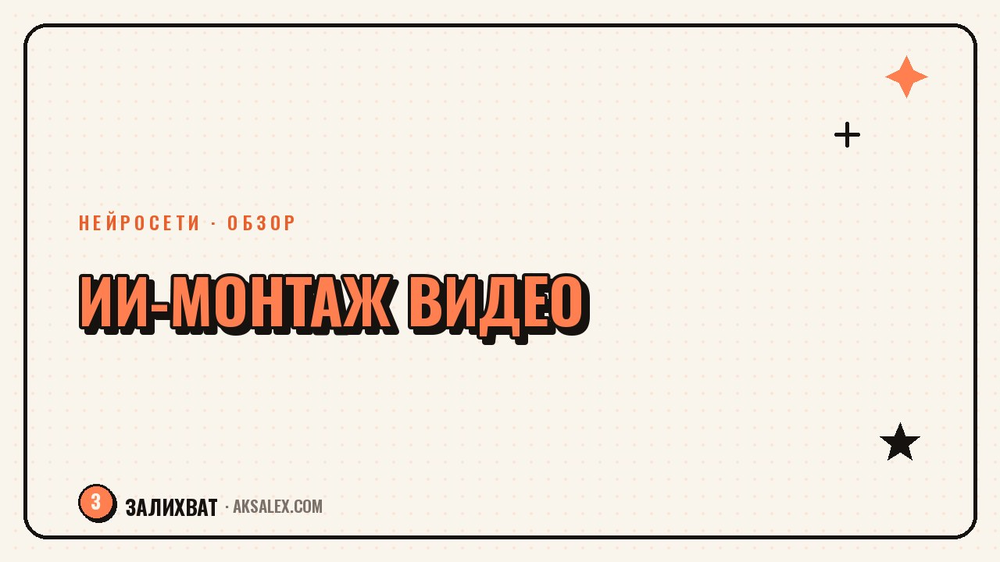

AI tools for video editing: what should a beginner choose

Editing is where beginners most often give up: figuring out the timeline, keyframes, and color grading takes forever, while you want a result right away. AI tools solve exactly this pain point: they take over cutting, subtitles, pacing, and color correction, leaving the creative decisions to you. Let's break down which tasks they actually handle and how to pick a tool that matches your level.
What tasks AI handles in video editing
Broadly speaking, all editing splits into routine work and creative work. Routine work is syncing audio, trimming pauses, placing subtitles, matching the pace to music. Creative work is choosing shots, building the story's composition, shaping the emotional rhythm. Today, AI tools handle the routine part well, while the creative decisions still rest with the human.
This means that even with the most advanced AI editor, you'll still have to choose which moments to keep in the video - but the technical part stops eating up hours of your time.
Types of tools and what they can do
Auto-cutting long videos
These tools take a stream or podcast recording and automatically find the standout moments for short clips. They save you time you'd otherwise spend rewatching an hour-long video to find five seconds worth a Reel.
Automatic subtitles
They recognize speech and overlay captions timed to the beat. Manually placing subtitles is one of the most time-consuming tasks in editing, and this is where AI saves the most time.
Color correction and stabilization
They even out lighting and remove camera shake without manual curve adjustments. Especially useful for videos shot on a phone under varying lighting conditions.
Comparison by task
Below is a guide to which type of tool to choose for a specific task if you're just starting out.
| Task | What you need | Learning curve |
|---|---|---|
| Cutting a long video into short clips | Auto-cutting with moment detection | Low |
| Subtitles synced to the rhythm | Automatic transcription | Low |
| Smooth transitions and color grading | Editor with AI presets | Medium |
| Assembling a video from scratch | Classic editor + AI modules | High |
Where a beginner should start
Don't dive straight into a professional editor with dozens of panels - it drains motivation faster than it delivers results. It makes more sense to start with one task: for example, automatic subtitles, and gradually add new tools as the old ones stop being enough.
The best editing tool isn't the one with the most features - it's the one that actually gets your video published.
- Start with a phone app - many now handle both subtitles and cutting
- Move to a desktop editor once you hit the limits of mobile
- Don't rush into complex effects - viewers value a clear story more than transitions
Common mistakes when choosing a tool
The first mistake is trying to master three or four tools at once. This scatters your attention and lengthens the editing process instead of speeding it up. The second mistake is choosing a tool based on the number of effects rather than how quickly it lets you assemble your specific video format.
The third mistake is fully trusting automation at the final stage. AI cuts and stabilizes well, but you should still check the final pacing and meaning of the story yourself before publishing.
Frequently Asked Questions
Can I edit video with absolutely no experience?
Yes, modern AI-powered tools are designed specifically for beginners - most of the technical work is done automatically, and all you have to do is pick the shots and their order.
Do I need a powerful computer for AI editing?
Not necessarily. Many tasks, like subtitles and clip cutting, are processed on the service's side rather than on your device.
Will AI replace a video editor completely?
Not yet. AI handles the routine operations, but choosing the story, pacing, and emphasis remains a creative task for a human.
Which tool should a beginner start with?
Automatic subtitles and clip cutting - these are the clearest features that immediately produce noticeable results without any learning curve.
Is it worth using several tools at once?
At the start, it's better to stick to one or two, so you don't waste time switching between services instead of actually editing.
not by hand